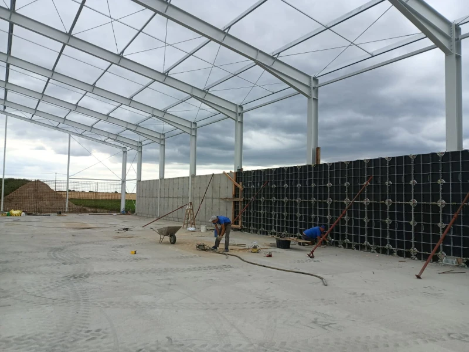

Szalunek Ścienny Typu Tekko
Nowy i używany szalunek ścienny typu Tekko. Sprzedaż i wynajem szalunków budowlanych z dostawą w całej Polsce.
Zamów wycenęSzalunek Ścienny Typu Tekko
Szalunek ścienny typu Tekko to nowoczesne rozwiązanie w budownictwie, które umożliwia szybkie i efektywne formowanie ścian betonowych. Oferujemy zarówno nowe, jak i używane szalunki Tekko, które są dostępne do sprzedaży i wynajmu. Nasze szalunki są solidne, trwałe i łatwe w montażu, co pozwala na skrócenie czasu realizacji projektów budowlanych.
Dzięki naszym usługom transportu i doradztwa, możemy dostarczyć szalunki Tekko bezpośrednio na plac budowy w całej Polsce. Skontaktuj się z nami, aby uzyskać wycenę i dowiedzieć się więcej o dostępnych opcjach.
Dostępne wymiary
Szerokość
- 90 cm
- 75 cm
- 70 cm wielotorowa
- 60 cm
- 50 cm
- 45 cm
- 40 cm
- 30 cm
- 25 cm
- 10 cm
- 5 cm
Wysokość
- 150 cm
- 120 cm
- 90 cm
Budowa i Cechy:
- Konstrukcja: Szalunek typu Tekko składa się z paneli stalowych, które są połączone ze sobą za pomocą systemu zaczepów. Panele te są wytrzymałe na duże obciążenia i mają odpowiednią sztywność, co zapewnia stabilność podczas betonowania.
- Materiał: Panele szalunkowe Tekko wykonane są z wysokiej jakości stali, co gwarantuje ich dużą odporność na uszkodzenia mechaniczne oraz długowieczność. Pokryte są wysokogatunkową sklejką brzozową z filmem fenolowym 220g/m2.
- Modularność: System jest modułowy, co oznacza, że poszczególne elementy można łatwo dopasować do wymiarów konstrukcji. Możliwość łączenia różnych paneli w zależności od wysokości i długości ściany czyni go wszechstronnym narzędziem w budownictwie.
- Wysoka jakość wykonania: Panele są starannie wykonane i precyzyjnie dopasowane, co zmniejsza ryzyko powstawania błędów przy wylewaniu betonu i gwarantuje gładką powierzchnię ściany.
- Zabezpieczenia: anele są wyposażone w odpowiednie zabezpieczenia, które uniemożliwiają ich przypadkowe przesunięcie podczas pracy.